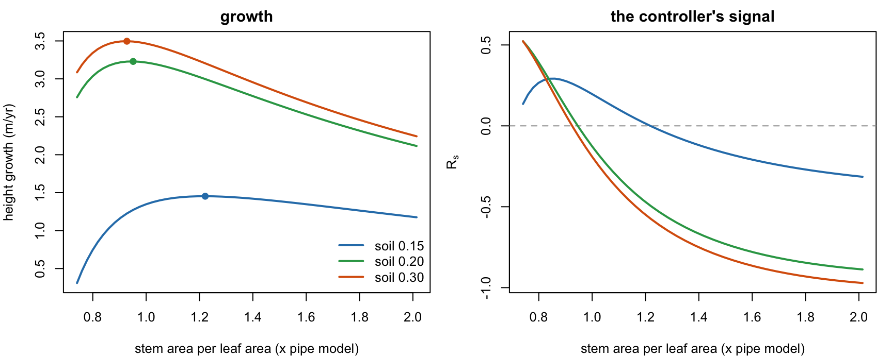
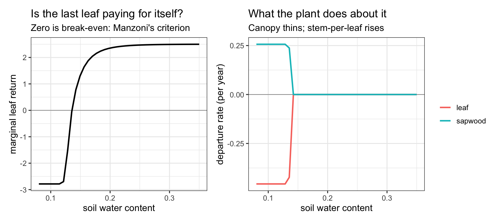
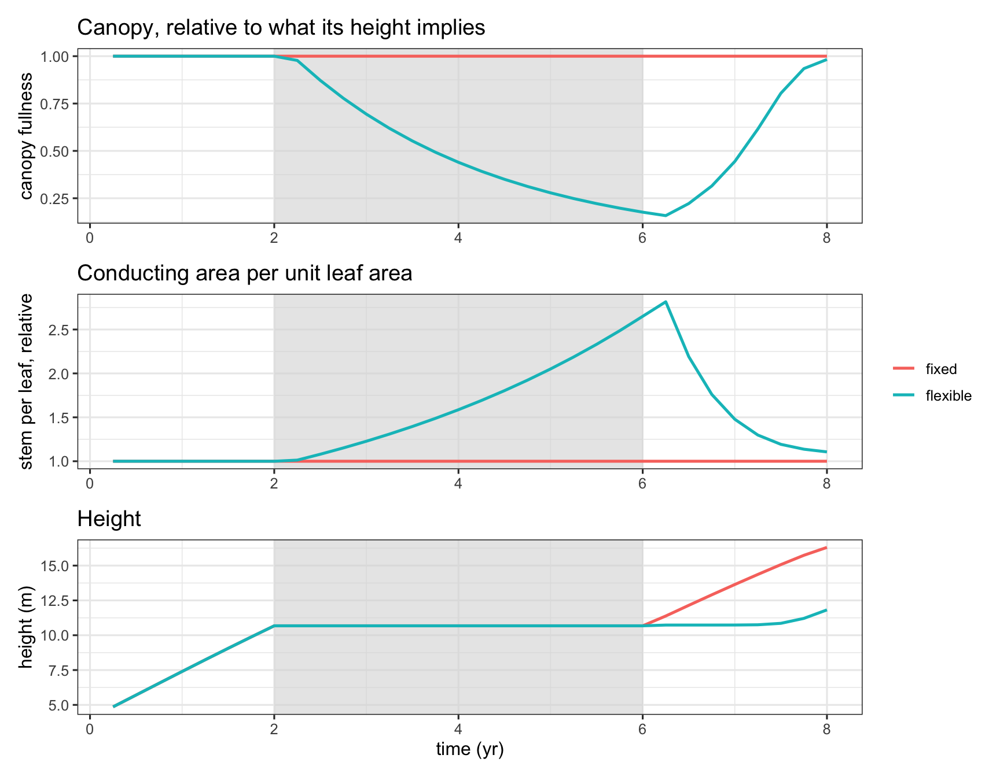
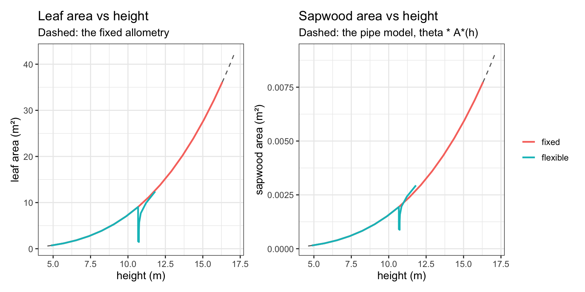

Flexible allometry in TF24 — what it does, and why it does not yet buy survival
guide
Code
library(plant)library(ggplot2)library(patchwork)library(dplyr)library(tidyr)# Shared computation, installed with plant so its tests can exercise it: a# chunk that runs is not a chunk that is checked.source(system.file("guide-helpers", "allometry_demo_helpers.R", package ="plant", mustWork =TRUE))theme_set(theme_bw(base_size =12))
Real plants under stress thin their canopies. TF24 could not: leaf area was pinned to height, so a struggling plant had no way to economise and no option but to die. It now has one.
This page shows the new mechanism working — a plant thinning through a drought and rebuilding afterwards, and a suppressed plant doing the same in the shade — and then shows the problem with it. Through a single drought, thinning saves the plant nothing. We have tested two different triggers for it, and neither changes whether a plant survives, while thinning costs it metres of height. That rules the trigger out and points somewhere else, which is the useful part. In a stand under seasonal rain it does raise survivorship — and costs more in seed production than the survival is worth.
The mechanism is off by default. Everything here runs with it switched on.
Principles
These are the rules the build follows. Most of the design decisions below are consequences of them rather than independent choices, and where a measurement overturned one it is said so explicitly.
The old model must be recoverable exactly. Switching the mechanism off returns the fixed allometry’s rates bit for bit, not approximately. This is a diagnostic, not an end in itself: it is how we know a decomposition is algebraically right rather than merely plausible. (A whole run is no longer bit-identical, for a reason outside the model: see the appendix.)
Bounds should follow from the form, not from clamps. Where a quantity must stay in a range, arrange the flow so it cannot leave — a rate that vanishes at the boundary. A clamp changes the answer silently, is a kink in every downstream derivative, and hides the overshoot it was added to catch.
Everything smooth. No min, max or branches in the carbon-to-growth map. Automatic differentiation is coming, and a kink propagates into every sensitivity that passes through it.
Carbon and tissue balance as an identity. Carbon a plant declines to spend and tissue it consequently loses are two halves of one decision, so they are computed from one number and asserted as an identity, never as a tolerance.
Only gate a pool that has a state. Withholding the cost of tissue that cannot shrink saves carbon no tissue paid for — a free lunch, and a silent one.
Scale-free where possible. Rates are relative, so the same parameter means the same thing for a seedling and a mature tree. This is what keeps the plasticity parameters from repeating storage_prod_eps’s mistake of being an absolute constant against fluxes spanning six orders of magnitude.
Signals that drive slow structure must be slow. Assimilation swings with the weather; leaf and stem take years to build. Anything reading the first to decide the second reads a running mean.
Numerically safe always. A state that runs somewhere its arithmetic stops meaning anything is a defect even when the biology it represents is right — a dying plant is still integrated alongside live ones.
Follow the evidence, and record what it overturns. Two of the decisions here reverse earlier ones after measurement, and both retractions are kept in place rather than quietly edited away.
What changed
TF24 used to pin leaf area to height through a fixed allometry, A = A*(h). A plant could not carry less leaf than its height implied, and its height could only ever increase, so thinning was not expressible at all.
Leaf area and sapwood area are now ODE states. But they are carried as departures from their preferred values rather than as the areas themselves:
state
in words
resting value
log_area_leaf_departure
how much less canopy the plant carries than its height implies
0
log_area_sapwood_departure
how much more conducting stem it carries than its canopy needs
0
Leaf area is then derived rather than integrated. Writing phi for the first departure, A = A*(h) * exp(phi), so phi = 0 means “exactly on the old allometry” and phi = -0.7 means “half a canopy”.
NoteWhy the two move in opposite directions
Both departures are defined the same way — the log of what a plant has over what it should have. What differs is the reference, because the allometry is a chain:
\[h \;\longrightarrow\; A = A_\star(h) \;\longrightarrow\; A_s = \theta A\]
Each departure is measured against its own parent in that chain. phi asks “how much leaf do I carry, against what my height implies?”; psi asks “how much conducting stem do I carry, against what my canopy needs?”.
Under stress they then move oppositely, and that is the physical result rather than an inconsistency. Leaves turn over faster than sapwood, so the canopy falls below what its height implies (phi negative) while the stem is left carrying more than the now-smaller canopy needs (psi positive).
Referencing both to height instead — which would be \(\psi' = \psi + \phi\) — would give them a shared sign. It would cost two things: psi would stop being the log Huber value, which is the quantity the hydraulics actually reads, and the clean psi >= 0 invariant would become the messier \(\psi' \ge \phi\).
Carrying departures rather than levels is what makes the old model recoverable exactly. Integrating leaf area alongside height would make A = A*(h) a redundant relationship that the ODE solver holds only to its own error tolerance, so height would end up reading a slightly drifted leaf area. On the departure coordinate the allometric part stays exact and only the departure is integrated — so with the mechanism off, its rate is exactly zero and the old model’s rates come back bit for bit.
The switch is a_pl0: the largest fraction of leaf and sapwood turnover a plant may decline to replace. a_pl0 = 0, the default, is the old model.
Code
s <-TF24_Model()data.frame(quantity =c("model", "number of states", "a_pl0 (default, = off)","a_pl1 (marginal leaf return where withholding is half its max)","a_pl2 (gap scale)","k_l (leaf turnover, /yr)", "k_s (sapwood turnover, /yr)"),value =c(model_id("TF24"), TF24_Individual(s)$ode_size, s$pars$a_pl0, s$pars$a_pl1, s$pars$a_pl2,round(s$pars$k_l, 4), s$pars$k_s)) |> knitr::kable()
quantity
value
model
TF24@v16
number of states
9
a_pl0 (default, = off)
0
a_pl1 (marginal leaf return where withholding is half its max)
0
a_pl2 (gap scale)
0.2
k_l (leaf turnover, /yr)
0.4566
k_s (sapwood turnover, /yr)
0.2
How it works, in words
A plant sheds when its marginal leaf stops paying for itself. Not when its reserves run out — when the last leaf’s assimilation no longer covers its own upkeep and that of the fine root and bark that come with it. Below that point, the plant declines to replace some of the leaf and sapwood its turnover destroys, and is not charged for what it does not replace.
It reads a running mean, not today’s weather. Assimilation swings daily; a canopy takes years to build. The gate reads a filtered balance with a memory of about four months — long against weather, short against a drought.
Leaves go faster than stem. Leaves turn over at k_l = 0.46/yr and sapwood at k_s = 0.20/yr, so withholding both thins the canopy faster than the stem. Conducting area per unit leaf area therefore rises. Nothing imposes this; it falls out of the two rate constants.
When the balance recovers, the plant rebuilds, redirecting growth from height into canopy, tapering off as the gap closes.
Height never falls, and the canopy never empties. A plant in deficit stops growing, and thinning tapers to nothing at a floor.
ImportantWhy the trigger is the carbon balance and not the reserve pool
The first version gated on the NSC reserve fraction: shed once reserves are nearly gone. Two lines of evidence overturned it.
Theory. Manzoni et al. (2015) maximise a season’s carbon gain over leaf area and derive the trigger: dG/dL = 0, i.e. shed once a leaf stops covering its upkeep. That fires while the plant is still carbon-rich — their Fig. 4D has cumulative gain at its seasonal maximum when shedding starts. Waiting for reserves to run down is precisely the evergreen strategy in that paper, and it is the one that loses a long drought, running its season’s gain from +150 to −50 gC m⁻².
Field data. In Robinson’s mulga, 85 per cent of trees shed — the healthiest included — and the died and survived canopy distributions are indistinguishable in the first year. Shedding is what healthy trees do, not what dying trees do last.
Measured here, the reserve gate bought a survival factor of 1.0–1.13 even when moved as early as it would go. The carbon-balance gate is the better model on the evidence; it does not, as it turns out, fix survival either — see below.
When does shedding pay? An analytical criterion
This is the centre of the design. Thinning is only worth doing if it improves the plant’s carbon budget, and that can be settled on paper rather than by running stands.
The budget splits in two
At a given height, every cost either scales with leaf area or does not. Leaf, fine root and bark all do — bark because it is pinned to leaf area. Sapwood does not: it is carried whether or not any particular leaf exists. So
where \(\bar a\) is assimilation per unit leaf area. It depends on \(A\) only through the Huber value \(A_s/A\): fewer leaves on the same stem means better hydraulic supply to each.
The last two columns agree to machine precision, so this is the model’s own budget rearranged rather than an approximation of it.
Differentiate at fixed sapwood
Real thinning happens at roughly constant sapwood: the stem is lost only to heartwood, at k_s, while leaves go at the faster k_l. So the derivative that matters holds \(A_s\) fixed — and since \(k_{\max}\propto A_s/A\), reducing leaf area raises supply per leaf:
Writing \(\kappa = g/(c\bar a)\) for the leaf-side cost as a fraction of the leaf-side gain, shedding improves the budget exactly when this is negative:
\(\eta\) is the elasticity of per-leaf assimilation to hydraulic supply, and it is the whole content of the criterion.
\(\eta = 0\) — no hydraulic feedback — gives \(\kappa > 1\): shed once leaf-side costs exceed leaf-side gains. That is exactly Manzoni et al. (2015)’s \(A_\text{net} = 0\), and it is what the model implements today.
\(\eta = 1\) — assimilation proportional to supply — means shedding always pays: halving leaf area leaves total assimilation unchanged and halves the cost.
\(\eta > 1\) means leaf area is actively counterproductive: removing leaves raises total assimilation.
\(\eta\) rises with height, because \(k_{\max}\) falls with the stem’s path length — a taller plant is more supply-limited, so relieving that limitation is worth more. In this soil shedding first pays at 20 m, and above 20 m \(\eta\) exceeds 1: TF24 says a tall plant assimilates more in total after shedding leaves.
The effect is much milder than it was. Per-leaf assimilation falls only 1.08-fold between 5 m and 15 m, where it fell 46-fold before plant#617 replaced a stem resistance linear in height with a path integral, so \(\eta\) crossed 1 near 10 m then and does so above 20 m now.
What this settles, and what it does not
It closes the gap in which a tall plant died without ever shedding. That gap was an artefact of setting \(\eta = 0\): with the hydraulic term included, tall plants are exactly the ones for which thinning pays most.
Solvency is not wrong, but it is late. Across every size and soil tried, no state has the plant insolvent while shedding hurts — so gating on whole-plant solvency would never make a plant thin pointlessly. What it would do is fire late: there is a wide band of solvent plants for which thinning already pays.
And that band is an artefact of the stem being wrong, not of the criterion. Sweeping the sapwood departure at fixed leaf area, for a 20 m plant in moist soil:
Net production is maximised at stem-per-leaf about 2.0 times the value the pipe model prefers, and at that sapwood shedding does not pay.
So a plant carrying its optimal stem is one for which thinning does not pay while it is solvent, and the two criteria coincide. The discrepancy above is the model sitting at a badly-placed Huber value, not a disagreement between the criteria.
This also says a single fixed\(\theta\) cannot be right, because \(k_{\max}\propto 1/h\): the ratio that suits a seedling starves a 15 m tree. It is the strongest argument yet for the sapwood target being derived rather than fixed.
WarningWhy this is not implemented yet
Two reasons, both about measuring \(\eta\) rather than about the criterion.
The auxes cannot currently measure it.profit and shadow_cost reconstruct P exactly at a resting state but are about 2 per cent out at a departed one. That is small against the level and comparable to the difference being taken, so differencing \(\bar a\) directly is unusable. The \(\eta\) column above is therefore recovered from the measured dP/dA through the exact decomposition — a valid measurement of \(\eta\), but not an independent check of the criterion.
And the number it depends on moves with the hydraulics. plant#617 (epic plant#615) replaced a stem resistance linear in height with a path integral over conduit widening and the Huber profile; with that and the model’s changes since, the drop in per-leaf assimilation between 5 m and 15 m went from 46-fold to almost nothing. An \(\eta\) is only ever as good as the height-resistance relation it is measured against.
There is also a prior question. The leverage above is large partly because the plant sits far from a sensible sapwood-to-leaf ratio, so P is a small residual between large numbers. Sapwood should track its optimum first; then the shedding question is posed against a well-configured stem instead of a misconfigured one. That part is now built, and is the next section.
Sapwood tracks its own optimum
The stem no longer sits where the pipe model puts it. It moves, slowly, toward the Huber value that maximises the plant’s growth rate:
\[\frac{d\psi}{dt} = a_{sw}\,R_s\]
This is an integral controller. It has no resting point except \(R_s = 0\), so it converges on the optimum rather than tracking it with an offset — and because integrating is averaging, a small \(a_{sw}\) makes the stem respond to the long-run mean of a signal that swings with the daily weather. No separate running-mean state is needed; the one built for the shedding gate was needed because that gate reads its signal instantaneously, and this one does not.
The objective is growth, not production
This distinction is the whole design. Against production, extra sapwood is almost always worth building: it raises \(k_{\max}\), which raises assimilation, and nothing in \(P\) charges the plant for the leaf area it did not build instead. That is why the table above puts the production optimum out at 2.0x.
Growth internalises the trade-off, because carbon in the stem is carbon not in the canopy:
\[R_s \;=\; \underbrace{\text{availability}}_{\text{can it be paid for?}}\times\;
\frac{1}{\text{maintenance}}\left(\frac{\partial P}{\partial \psi}
\;-\; \underbrace{P\,\frac{\partial m_s}{\partial A}\,\frac{\partial A}{\partial m_{live}}}_{\text{price of the extra stem}}\right)\]
Drop the second term and you optimise production; keep it and the optimum moves in to where growth actually peaks — for a 10 m plant in moist soil, slightly below the pipe-model ratio (see the sweep below). The optimum is not one number: it depends on height and on soil water, which is the point.
The derivative costs a second solve, and an argument that it does not
\(\partial P/\partial\psi\) needs \(d(\text{profit})/d(k_{\max})\), which is a second leaf solve on the hottest path in the package. There is a tempting argument that it need not be — and it is wrong, which is worth recording because it was believed long enough to ship.
The argument. Profit is already maximised, so by the envelope theorem the derivative with respect to a parameter is the partial derivative at the optimum already found: re-evaluate at the collar potential you have, and the indirect term vanishes because \(\partial\,\text{profit}/\partial\psi^\ast = 0\) there.
Why it fails. That holds for opt_psi_leaf_, which really is chosen to maximise profit. It does not hold for opt_root_psi_, the collar potential, which is not maximised at all — it is found by a root find, the potential at which the soil-root network’s supply matches the leaf’s demand. A constraint, not an optimum. So \(\partial\,\text{profit}/\partial(\text{collar}) \neq 0\) and the indirect term is real.
What it cost, measured before plant#617. Holding the collar fixed under-reported the sensitivity by 15–19%, which put the controller’s zero at 1.22x the pipe-model ratio where growth actually peaks at 1.28x. It was invisible in wet soil, where the scan grid was too coarse to resolve the gap. Re-solving properly matches a finite difference of the model’s own assimilation to 0.09% and lands the zero on the peak.
So a_sw > 0 roughly doubles the leaf work per rate evaluation. At the default a_sw = 0 the block never runs.
What it does
Code
ctl <-do.call(rbind, lapply(c(0.30, 0.20, 0.15), allometry_sapwood_controller))ctl$soil <-factor(sprintf("soil %.2f", ctl$theta_soil))ctl_peak <-vapply(split(ctl, ctl$theta_soil),function(d) d$huber_ratio[which.max(d$dheight)], numeric(1))starved <-allometry_sapwood_controller(0.12)par(mfrow =c(1, 2), mar =c(4, 4, 2, 1), cex =0.8)cols <-c("#2c7fb8", "#31a354", "#d95f0e")plot(range(ctl$huber_ratio), range(ctl$dheight), type ="n",xlab ="stem area per leaf area (x pipe model)",ylab ="height growth (m/yr)", main ="growth")for (i inseq_along(levels(ctl$soil))) { d <- ctl[ctl$soil ==levels(ctl$soil)[i], ]lines(d$huber_ratio, d$dheight, col = cols[i], lwd =2)points(d$huber_ratio[which.max(d$dheight)], max(d$dheight),pch =19, col = cols[i])}legend("bottomright", levels(ctl$soil), col = cols, lwd =2, bty ="n")plot(range(ctl$huber_ratio), range(ctl$R_s), type ="n",xlab ="stem area per leaf area (x pipe model)",ylab =expression(R[s]), main ="the controller's signal")abline(h =0, col ="grey60", lty =2)for (i inseq_along(levels(ctl$soil))) { d <- ctl[ctl$soil ==levels(ctl$soil)[i], ]lines(d$huber_ratio, d$R_s, col = cols[i], lwd =2)}

Filled circles mark where growth peaks. The signal crosses zero where growth peaks — that is the property the whole derivation exists to produce, and it is asserted in test-model-tf24.R on the grid rather than by interpolation, so that a controller built on production instead fails rather than passing on a tolerance.
The optimum moves with soil water — 0.93x in wet soil, 0.95x in moist and 1.22x as it dries. A drier plant wants more stem per leaf, which is the hydraulic acclimation a single fixed \(\theta\) cannot express, and it is why the pipe model is wrong in a way no re-tuning of \(\theta\) could fix: a 10 m plant in wet soil wants less stem than the pipe model gives it, and the same plant in drying soil wants more.
One honest wart sits just off the dry end of this plot. At soil 0.12 a 10 m plant cannot grow at any stem ratio (dh/dt at most 2.2e-11 m/yr), so the availability factor switches the controller off — \(R_s\) is at most 1.9e-11 — and it can only start acclimating once it has some carbon to acclimate with. That is the correct accounting, but it does mean the plant that would benefit most from more stem is the one least able to build it.
Turning it on is not a small effect. On the wet stand of the self-thinning section, \(a_{sw} = 0.5\) raises lifetime offspring production from 987.6 to 1090, because the default pipe-model ratio is simply not where growth is maximised.
NoteThree things that had to be got right, and were not at first
The figures in this box were measured before plant#617, when the errors were found.
Sapwood turnover is gated, so its derivative is not \(k_s m_s\). What the budget is charged is \(f_s k_s m_s\) with \(f_s \propto e^{-\psi/a_{pl2}}\) against \(m_s \propto e^{\psi}\), so the charge falls steeply with \(\psi\). Differentiating the ungated cost drops a term worth 6.8 of 13.1 kg/yr and moves the zero from 1.35x to 1.05x — an error invisible to any check on sign or monotonicity.
The denominator has to stay positive. Profit is net of leaf respiration and goes negative in exactly the drought where the controller most needs a sign, so \(R_s\) divides by the maintenance bill instead.
Re-proportioning has to be paid for. Nothing debits the budget for this drift, so a plant in deficit would keep thickening its stem on carbon it does not have. The reserve gate \(G\) is not the right switch — at soil 0.13 reserves are still full, and what has gone to zero is production. The availability factor \(F/(F + \text{maintenance})\) vanishes with the growth flux, and being strictly positive it cannot move the zero, only the speed.
What it does
The gate
The gate responds to soil water — through the marginal leaf’s carbon balance — while reserves are held full throughout. That is the demonstration that reserves are no longer the axis it reads.
Code
gate <-allometry_gate_map(a_pl0 =1.0, height =5)edge <-allometry_gate_map(a_pl0 =1.0, height =5, theta =c(0.15, 0.13))p_margin <-ggplot(gate, aes(theta_soil, margin)) +geom_hline(yintercept =0, linewidth =0.3, colour ="grey50") +geom_line(linewidth =0.9) +labs(x ="soil water content", y ="marginal leaf return",title ="Is the last leaf paying for itself?",subtitle ="Zero is break-even: Manzoni's criterion")p_rates <- gate |>select(theta_soil, leaf = dphi, sapwood = dpsi) |>pivot_longer(-theta_soil) |>ggplot(aes(theta_soil, value, colour = name)) +geom_hline(yintercept =0, linewidth =0.3, colour ="grey50") +geom_line(linewidth =0.9) +labs(x ="soil water content", y ="departure rate (per year)", colour =NULL,title ="What the plant does about it",subtitle ="Canopy thins; stem-per-leaf rises")p_margin + p_rates

A 5 m plant across soil water, with reserves at 0.8 of capacity throughout. The old gate could not fire anywhere on this axis.
The two departure curves have opposite signs — that is the acclimation, and it is k_l > k_s showing up. And the response is switch-like in soil water, because the quantity it reads crosses zero sharply: between 0.15 and 0.13 the marginal leaf goes from 137 per cent in profit to 110 per cent in loss.
Through a drought and out the other side
A plant sits in wet soil, is dropped into a four-year drought, and is then returned to wet soil. Soil water is prescribed directly here so the carbon balance can be driven cleanly — this is not how the SCM drives soil water.
dry_band <-annotate("rect", xmin =2, xmax =6, ymin =-Inf, ymax =Inf,fill ="grey85", alpha =0.6)p1 <-ggplot(traj, aes(time, canopy_fraction, colour = allometry)) + dry_band +geom_line(linewidth =0.9) +labs(x =NULL, y ="canopy fullness", colour =NULL,title ="Canopy, relative to what its height implies")p2 <-ggplot(traj, aes(time, huber_ratio, colour = allometry)) + dry_band +geom_line(linewidth =0.9) +labs(x =NULL, y ="stem per leaf, relative", colour =NULL,title ="Conducting area per unit leaf area")p3 <-ggplot(traj, aes(time, height, colour = allometry)) + dry_band +geom_line(linewidth =0.9) +labs(x ="time (yr)", y ="height (m)", colour =NULL,title ="Height")(p1 / p2 / p3) +plot_layout(guides ="collect")

Shaded band is the drought. Canopy fullness of 1 means the plant sits on the old allometry.
The same trajectories seen in the plane the allometry lives in. The fixed plant is confined to the curve; the flexible one leaves it and comes back.
Code
s_demo <-TF24_Model()ref <-allometry_reference_curve( s_demo, seq(min(traj$height) *0.95, max(traj$height) *1.05,length.out =200))p_leaf <-ggplot(traj, aes(height, area_leaf, colour = allometry)) +geom_line(data = ref, aes(height, area_leaf), inherit.aes =FALSE,linetype ="dashed", colour ="grey40") +geom_path(linewidth =0.9) +labs(x ="height (m)", y ="leaf area (m²)", colour =NULL,title ="Leaf area vs height",subtitle ="Dashed: the fixed allometry")p_sap <-ggplot(traj, aes(height, area_sapwood, colour = allometry)) +geom_line(data = ref, aes(height, area_sapwood), inherit.aes =FALSE,linetype ="dashed", colour ="grey40") +geom_path(linewidth =0.9) +labs(x ="height (m)", y ="sapwood area (m²)", colour =NULL,title ="Sapwood area vs height",subtitle ="Dashed: the pipe model, theta * A*(h)")(p_leaf + p_sap) +plot_layout(guides ="collect")

Leaf and sapwood area against height. Dashed lines are the fixed allometry. Note the two y-axes differ by four orders of magnitude.
These two panels are the clearest statement of what the change does. The fixed plant cannot leave the dashed curve — that was the whole constraint. The flexible one tracks it while conditions are good, drops below it during the drought as the canopy thins at constant height — a vertical fall, since height is frozen — and then climbs back onto it as the canopy rebuilds.
The sapwood panel shows the asymmetry — but compare the two relative to their own curves rather than by eye, since the y-axes differ by four orders of magnitude. At the worst of the drought, leaf area falls to 16 per cent of what its height implies while sapwood area falls only to 45 per cent, because sapwood is lost at k_s and leaf area at the faster k_l. That gap between the two is exactly the rise in conducting area per unit leaf area.
All of this emerges from the two rate constants and the reserve gate. None of it is imposed:
the canopy thins to about 16 per cent of what its height implies, and can thin no faster than k_l, because the mechanism is declining to replace rather than actively shedding;
conducting area per unit leaf area rises to about 2.8 times its preferred value, purely because k_l > k_s;
height never falls — it stops, and resumes when the drought breaks;
on recovery the canopy rebuilds to about 99 per cent, smoothly, with no jump as the gap closes.
So the mechanism does what it was designed to do.
In the shade: self-thinning in a wet stand
Shade is as much the point as drought. A plant losing the light race has the same problem as one losing water — its leaves stop paying for themselves — and the same lever. Here a wet stand (rainfall 1.5 m/yr) is left to self-thin for 25 years.
This is the behaviour asked for, and it emerges from competition alone: dominants sit exactly on their allometry, suppressed plants thin progressively, and the thinnest are the ones on their way out. Nothing in the model knows about canopy position — the light gradient does all of it.
There is no gain at all — the ratio ends at 0.971, against a survivorship that falls to 5.4e-10 either way. And thinning costs something real: the flexible plant finishes about 4 metres shorter (12.0 m against 16.5 m), having spent its recovery carbon on canopy instead of height.
At the stand level the answer depends on the rain. Each stand is the one the self-thinning section uses — 25 years, a birth rate of 20 — with the rainfall named; “seasonal” is \(\bar r\,(1 + \sin 2\pi t)\), wet half the year and dry the other half.
Code
stand_cfg <-data.frame(stand =c("wet", "seasonal", "seasonal", "dry"),rain =c(1.5, 1.0, 0.6, 0.6),amplitude =c(0, 1, 1, 0))stands <-lapply(seq_len(nrow(stand_cfg)), function(i) lapply(c(0, 1), function(a)allometry_self_thinning(a, rain = stand_cfg$rain[i],amplitude = stand_cfg$amplitude[i])))stand_cfg |>mutate(r0_fixed =vapply(stands, function(x) x[[1]]$R0, 0),r0_flex =vapply(stands, function(x) x[[2]]$R0, 0),ratio =signif(r0_flex / r0_fixed, 3),# Each column formatted on its own, so a dry stand's tiny R0 prints# rather than rounding to the wet stand's decimal places.`a_pl0 = 0`=formatC(r0_fixed, digits =4, format ="g"),`a_pl0 = 1`=formatC(r0_flex, digits =4, format ="g")) |>select(stand, rain, amplitude, `a_pl0 = 0`, `a_pl0 = 1`, ratio) |> knitr::kable(align ="lrrrrr")
stand
rain
amplitude
a_pl0 = 0
a_pl0 = 1
ratio
wet
1.5
0
987.6
997.4
1.010000
seasonal
1.0
1
39.52
4.508
0.114000
seasonal
0.6
1
2.796
0.0009826
0.000351
dry
0.6
0
3.885e-13
3.262e-13
0.840000
Under constant rain the mechanism is close to neutral. Under seasonal rain it is expensive — and not because the shedding plants die. Following the first cohort of the seasonal stand at mean rain 1.0:
The shedding plants survive better — by a factor of 583 at 25 years, the one place on this page where thinning buys survival — but they do it by thinning every dry season and rebuilding every wet one out of the growth flux, so they finish with 26 per cent of a canopy and shorter, and make far fewer seeds. Why that trade comes out so badly, and whether the survival bought this way would count for anything in competition, is open.
NoteEarlier versions of this table said something else, twice
Before plant#617 it reported that shedding lowered offspring production by factors of 0.55 to 0.64 on seasonal stands, when resistance was linear in height and tall plants were penalised far more heavily. After plant#617 it read 0.92–1.00, close to free. Neither stand was recorded beside its numbers, and the stands above are not those; under v13’s brighter default light, and on these stands, seasonal rain makes the mechanism expensive again.
Why — and it is not the trigger
Three measurements rule out the obvious explanations, and a fourth rules out the trigger itself.
It is not that the sheddable costs are too small. Most of a plant’s maintenance does follow its canopy — leaf, fine root and bark all scale with leaf area, and only sapwood is sticky:
(An earlier draft of this page claimed sapwood respiration dominated the drought deficit. That was wrong, and this table is the retraction. Sapwood’s share does grow with height, which is why the tall row is worth showing, but even at 20 m most of the bill still follows the canopy.)
It is that thinning cannot reach balance, even though it now helps. This is the argument that changed most with plant#617, and the earlier version of it was wrong. A 10 m plant at soil 0.13:
Code
thin_pa <-allometry_thinning_per_area(height =10, theta_soil =0.13)thin_pa |>transmute(`canopy fullness`=signif(canopy, 2),`net production per m² leaf`=round(P_per_area, 2),`stem per leaf, relative`=round(huber_ratio, 1)) |> knitr::kable()
canopy fullness
net production per m² leaf
stem per leaf, relative
1.0000
-1.98
1.0
0.5000
-1.68
1.3
0.2000
-1.45
1.8
0.1000
-1.33
2.2
0.0500
-1.25
2.9
0.0180
-1.21
4.1
0.0067
-1.26
5.8
Thinning does improve the per-leaf carbon balance — by 39 per cent between a full canopy and the best one, at 2 per cent of full — because the remaining leaves inherit the whole stem’s hydraulic supply. But the improvement saturates, reverses, and never reaches zero.
WarningRetraction
Before plant#617 this table read −3.81 at a full canopy and worsened monotonically to −4.68, and the argument was that “thinning cuts income just as fast” — that shrinking the canopy shrinks both sides of the budget together. That is no longer true. With resistance derived from stem anatomy the hydraulic benefit of carrying a whole stem over fewer leaves is real and substantial, and there is an interior optimum — near a tenth of full canopy when this was first measured after plant#617, and near two per cent under the brighter default light of v13.
The conclusion survives the argument being replaced: a plant whose leaves cost more than they earn can now narrow the gap by having fewer leaves, but it still cannot close it. Thinning slows the burn; it never reaches balance.
The transition from fine to dead is a cliff, and it is narrow in soil water whatever the plant’s size:
Everything happens between 0.15 and 0.14. Seven orders of magnitude of survivorship are crossed in one hundredth of volumetric soil water.
And the two thresholds are in the wrong order in time. This is the decisive measurement. Sweeping intensity at three sizes, and reading the lowest canopy the shedding plant reaches beside the survivorship each plant ends with:
At soil 0.145 no plant thins: its leaves are still profitable, so it has no reason to — quite right — and yet the 20 m and 24 m plants die there anyway. At 0.140 every plant thins, and every plant dies. Following the 10 m plant through that drought shows the order:
By the time the canopy has moved by a tenth of a per cent, survivorship is already down to 0.23. Mortality saturates ahead of shedding, so there is no intensity at which a plant is both stressed enough to thin and alive enough to profit from it.
WarningRetraction
An earlier version of this table read the canopy after the recovery and called it the minimum, so a 10 m plant at 0.140 appeared never to thin at all. It thins, to 0.68 of a full canopy. The argument survives on the order in time rather than on the absence of thinning.
The largest gain in the grid is 13-fold, and it takes survivorship from 2.1e-08 to 2.6e-07. Both of those are dead. In this grid, and in a 90-cell sweep of size, intensity and duration taken before v13, there is no cell where the fixed plant dies and the shedding plant lives.
No gate can fix this, because the ordering is not the gate’s doing: mortality collapses as soon as net production turns slightly negative, since the pool has no resting point and drains completely.
NoteThe gate itself was tested, and is not the problem
Three gates have been run through the same drought. These were measured before plant#617 and have not been re-taken, so read the levels as historical — but the comparison between them is what matters, and the ordering above is unchanged:
gate
fires when
survival gain
reserve fraction, centred at 0.05
reserves nearly gone
1.010
reserve fraction, moved as early as it goes
reserves at 30%
1.0–1.13
marginal leaf balance (current)
leaf stops paying, reserves still full
1.001
Firing earlier, on a better-supported signal, bought nothing. The carbon-balance gate is still the right model — the evidence for it is independent of survival — but survival is downstream of something else.
The real cause is the reserve pool, and what mortality reads
The storage pool has no resting point. Its rate is \(\dot S = \text{charge}\,(1-r) - \text{drain}\,r\), so positive production fills it to capacity and negative empties it, with nothing in between. The reserve fraction is therefore close to a binary readout of the sign of net production. Mortality then reads it through \(a_{dG1}e^{-a_{dG2} r}\) with \(a_{dG2}=20\), sharp enough to turn a near-binary input into a near-binary output spanning eight orders.
So a mechanism that makes a plant modestly cheaper to run has nothing to act on, whatever triggers it. The buffer does not buffer.
The literature says both halves of this are wrong (see the NSC appendix): plants hold a minimum NSC of about 46 per cent of their seasonal maximum and are found empty only when dead, and they sacrifice growth to defend storage — the reverse of TF24, which gates growth and leaves storage as the residual.
Where the fix has to go
Give the pool a resting point. If the part of a deficit the pool cannot meet were paid by consuming tissue — which is what canopy thinning is — the pool would stabilise instead of emptying, and the reserve fraction would sit somewhere informative. NEWS already records that this unmet deficit currently leaves the budget, with “routing it into tissue loss” named as deferred work.
Defend storage ahead of growth. Beech under three years of drought increased NSC for two years before starch fell, and the authors conclude that maintaining storage at the expense of growth was key to survival. TF24 does the opposite.
Change what mortality reads. A reserve fraction cannot see a plant that has made itself cheaper to run — which is exactly what thinning does. Time to depletion at the current burn rate can, and predicted mortality better than any instantaneous level across 12 species.
Also unresolved: nothing bounds the departures in permanent deficit
If the balance never recovers, withheld leaf turnover (0.46/yr) outruns withheld sapwood turnover (0.2/yr) whatever the plant does, so both departures grow without limit — the canopy toward nothing, the stem-per-leaf ratio toward infinity.
This is arithmetic rather than a defect. A plant thinning at 46 per cent a year while losing stem at 20 per cent really does have an ever-rising ratio. But what removes such a plant is mortality, not the allometry, and a cohort model keeps carrying it meanwhile.
Related, and worth watching: the rebuild rate grows as the canopy empties, which is the same fast-boundary shape that plant#609 identified for the storage pool. It has not caused a failure in any run so far.
What is settled
Code
data.frame(claim =c("Switched off, the old model is recovered","Carbon and tissue balance when replacement is withheld","Stem per leaf never falls below its preferred value","Height never decreases","The canopy rebuilds after a drought"),basis =c("every rate bit-identical; a whole run moves within the ODE tolerance (appendix)","an exact identity: turnover not charged is mass lost","follows from the form, given that k_l > k_s","follows from the form: a product of non-negative factors",sprintf("measured: to %.0f per cent of preferred, smoothly",100*tail(traj$canopy_fraction[traj$allometry =="flexible"], 1)))) |> knitr::kable()
claim
basis
Switched off, the old model is recovered
every rate bit-identical; a whole run moves within the ODE tolerance (appendix)
Carbon and tissue balance when replacement is withheld
an exact identity: turnover not charged is mass lost
Stem per leaf never falls below its preferred value
follows from the form, given that k_l > k_s
Height never decreases
follows from the form: a product of non-negative factors
The canopy rebuilds after a drought
measured: to 99 per cent of preferred, smoothly
The open questions are the sections above: through a drought thinning does not buy survival, under seasonal rain the survival it does buy costs more seed than it is worth, and nothing bounds the departures for a plant that never recovers.
Future refinements
Deliberately out of scope here, recorded so they are not rediscovered.
A discrete re-flush drawing on stores. Leaf construction is fully paid for in the rebuild term — leaf, fine root, sapwood and bark at the preferred ratio — so nothing is missing from the budget. What is missing is the shape: rebuilding is continuous, financed out of current flux, whereas a real plant flushes a canopy in a burst financed from reserves. Manzoni prices such a flush at 12–16 per cent of a season’s gain, and whether one happens changes his result qualitatively at long drought duration. This is also the natural place for a reserve term to re-enter: modulating the cost of recovering, not the onset of shedding.
Acclimation of photosynthetic capacity.Amax is fixed here, but it is observed to scale back under sustained stress (Joshi et al. 2022). That is a cheaper adjustment than shedding and a faster one, so it should sit between stomatal closure and leaf loss in the ladder — and its absence may be part of why the marginal balance crosses zero as abruptly as it does.
Leaf turnover under an optimality argument.k_l is currently a trait fixed by the LMA trade-off. Leaf lifespan is itself an optimisation — hold a leaf while its marginal return exceeds the cost of replacing it — so k_l could be derived rather than imposed, in the same currency as the shedding gate. Attractive because it would make shedding and leaf lifespan one mechanism instead of two.
Optimality-derived allometric targets. The preferred sapwood-to-leaf ratio, and ultimately the preferred leaf area itself, could come from stationarity of the plant’s own growth rate rather than from fixed coefficients. Its own epic; the sapwood target is written as a replaceable function so this can drop in.
Drought-deciduous habit. Setting the canopy floor near zero already permits shedding to nothing and re-flushing, and that is supported behaviour for some species. It is not the habit this model is aimed at, and the departure coordinate degrades as the floor approaches zero, so it stays possible rather than prioritised.
Appendix: the mathematics
TipThese equations are checked, not just written down
plant’s tests/testthat/test-allometry-demo.R reimplements this appendix in R — working from the prose rather than from the source — and compares it against what the C++ computes, across 81 combinations of height, both departures and reserve level. They agree to 1e-10. So a divergence between this description and the model fails a test, rather than quietly misleading a reader.
Symbols
symbol
in the code
meaning
\(h\)
height
height, a state (m)
\(\phi\)
log_area_leaf_departure
leaf-area departure, a state
\(\psi\)
log_area_sapwood_departure
sapwood departure, a state
\(S\)
storage
NSC pool, a state (kg)
\(m\)
leaf_marginal_return
the marginal leaf’s carbon balance, an aux
\(\bar m\)
leaf_marginal_return_tracked
its running mean, a state
\(A_\star(h)\)
area_leaf(height)
preferred leaf area (m²)
\(A\), \(A_s\), \(A_b\)
—
actual leaf, sapwood, bark area (m²)
\(\rho_\ell,\ \rho_s\)
replacement, replacement_sapwood
replaced share of leaf / sapwood turnover
\(u_\ell,\ u_s\)
withheld, withheld_sapwood
withheld share, \(1-\rho\)
\(\sigma\)
rebuild_share
share of growth redirected to rebuilding
\(b\)
rebuild_rel
relative rebuild rate (yr⁻¹)
\(F\)
growth_flux
carbon for growth and reproduction (kg yr⁻¹)
Sizes
The allometry itself is unchanged, \(A_\star(h) = (h/a_{l1})^{1/a_{l2}}\). What changes is that a plant need not sit on it:
So \(\phi\) is log canopy fullness, and \(\psi\) is the log of the Huber value relative to its preferred value \(\theta\). Masses follow as before: \(m_\ell = \lambda A\) (with \(\lambda\) the leaf mass per area), \(m_r = a_{r1} A\), \(m_s = A_s h \eta_c \rho\) and \(m_b = A_b h \eta_c \rho\).
Note
Bark area is still pinned to leaf area, \(A_b = a_{b1}\theta A\), rather than to sapwood. Repinning it to sapwood is arguably more physical — bark sheathes the stem — but it was left alone to keep this change bit-identical at rest.
Hydraulic supply per unit leaf area reads the Huber value the plant actually has,
where \(L\) is the stem’s effective path length (plant#617), which is \(h\eta_c\) itself when the anatomical profiles are switched off.
which is the channel through which thinning improves supply to the leaves that remain.
The replacement gate
The gate reads the marginal leaf’s carbon balance — its gain against the costs that scale with leaf area (leaf, fine root and bark), \(m = (\text{gain} -
\text{cost})/\text{cost}\) — through a running mean \(\bar m\) with \(d\bar m/dt = a_{pl4}(m - \bar m)\). The replaced share of leaf turnover is a logistic in \(\bar m\), tapered to nothing as the canopy approaches its floor \(a_{pl3}\); the sapwood share is that same quantity, scaled down by how over-built the stem already is:
\(a_{pl0}\) caps how much may be withheld, so \(a_{pl0}=0\) gives \(\rho_\ell \equiv 1\). Only the two pools that have states are gated; the turnover actually charged is
Bark and fine root stay fully charged because neither has a state to lose. Withholding their cost would save carbon that no tissue ever paid for. Coarse roots (\(m_{cr} = a_{cr1} m_s\), empty by default) follow the sapwood down but stay charged in full, which errs on the side of over-charging.
Growth, and where it goes
Net production and the existing NSC gate are untouched:
\[P = a_{bio}a_y(\tilde A - R) - T,\qquad
P_+ = \tfrac12\Big(P + \sqrt{P^2+\varepsilon^2}\Big),\qquad
F = P_+\,G(r).\]
\(F\) then splits between extension along the allometry and rebuilding the canopy, with the rebuild share gated on the same signal as replacement:
Extension moves the plant along the curve. Its marginal costs are evaluated at \(A_\star\) — the leaf area the plant’s height implies — because they are properties of the curve, and a plant’s place on the curve is given by its height:
Rebuilding buys leaf area at unchanged height, and buys the whole package — leaf, fine root, and the sapwood and bark that supply it — at the ratio the plant prefers rather than the one it currently has:
\[c_{\text{reb}}(h) = \lambda + a_{r1} + \theta h \eta_c \rho\,(1+a_{b1}),
\qquad
b = \frac{\sigma F f_g}{c_{\text{reb}}(h)\,A}.\]
In words: the canopy loses the turnover it declined to replace, and regains what rebuilding buys. The Huber value moves on the difference between the two losses. The final term is exact geometry rather than a parameter — rebuilding adds leaf and sapwood in the ratio \(\theta\), so it moves the two logs by \(b/A\) and \(\theta b/A_s\), and their difference is \((b/A)(e^{-\psi}-1)\).
Properties that follow from the form
Thinning conserves carbon exactly. Carbon not charged is \(u_\ell k_\ell m_\ell + u_s k_s m_s\). The withholding terms move the states by \(d(\ln A)/dt = -u_\ell k_\ell\) and, since \(d(\ln A_s)/dt = d(\ln A)/dt + d\psi/dt\), by \(d(\ln A_s)/dt = -u_s k_s\). The mass lost is therefore \(\lambda u_\ell k_\ell A + h\eta_c\rho\,u_s k_s A_s\) — the same two terms. An identity, not a tolerance.
\(\phi \le 0\) is invariant. At \(\phi=0\), \(\sigma=0\) so \(b=0\), leaving \(d\phi/dt = -u_\ell k_\ell \le 0\): the flow points inward. A plant never carries more leaf than its height implies.
\(\psi \ge 0\) is invariant. At \(\psi=0\), \(\rho_s = \rho_\ell\) so \(u_s=u_\ell\), and \(e^{-\psi}-1 = 0\), leaving
So a stem never ends up with less conducting area than its canopy needs, the scaling factor \(e^{-\psi/a_{pl2}}\) stays within \((0,1]\), and no over-replacement can arise to cost unbounded carbon. ⚠️ If \(k_s\) were ever raised above \(k_\ell\), this argument reverses.
Height never falls.\(dh/dt\) is a product of \((1-\sigma) \in (0,1]\), \(F \ge 0\), \(f_g \ge 0\), and two positive derivatives.
\(a_{pl0}=0\) is the old model exactly.\(\rho_\ell = 1\) gives \(u_\ell = 0\); \(\phi=0\) gives \(\sigma = 0\) and hence \(b=0\); \(\psi=0\) gives \(\rho_s = 1\) and hence \(u_s = 0\). Both departure rates are exactly zero and \(e^0 = 1\) leaves the sizes bitwise unchanged, so every rate is the old model’s at any state.
A whole run is not bit-identical, though, and the reason is the solver rather than the model. odelia’s step rule reads the error as an RMS over every state, and three more states held at zero error count in that mean, so each step’s error reads smaller and the steps come out slightly longer. Default runs therefore move within the ODE tolerance — by 2e-7 on the default-run baseline.
One approximation, stated
Extension is charged at \(\partial m_{\text{live}}/\partial A\) evaluated at \(A_\star\), but a thinned plant adds only \(e^{\phi}\,\dot A_\star\) of actual leaf area for that money. A plant off its trajectory is therefore over-charged for extension, by a factor \(e^{-\phi}\).
The direction is conservative — a thinned plant grows more slowly than a strict budget would allow, never faster — and the error vanishes as the canopy recovers. It is the price of keeping extension exactly departure-preserving, which is what makes the resting model exact and confines all of the departure’s motion to plasticity.
Appendix: what the NSC literature says
Gathered because the reserve pool turned out to be the binding constraint, not the allometry. Every point here bears on a design decision above.
Plants defend the pool rather than draining it. A global synthesis of 121 studies and 177 species found minimum NSC around 46 per cent of the seasonal maximum, with depletion of total NSC “rare”; the authors propose a dual function in which starch is the reservoir while soluble sugars “are kept above some critical threshold” (Martínez-Vilalta et al. 2016, Ecol. Monogr., doi:10.1002/ecm.1231). TF24 lets the reserve fraction run to ~1e-10.
Storage outranks growth — the reverse of what we do. Beech under three years of drought increased NSC through years 1–2; starch fell only in year 3, and it was the dead trees that were “virtually empty”, with 87 per cent surviving. The conclusion is explicit: “maintaining an active C storage function at the expense of growth was certainly key to survival” (Chuste et al. 2019, Trees, doi:10.1007/s00468-019-01923-5). After release from darkness, “NSC reformation occurs preferentially over growth” (Weber et al. 2018, New Phytol., doi:10.1111/nph.14987).
Under moderate stress the pool is actively regulated back up. Across 47 studies and 52 species, prolonged slight-to-moderate drought brought NSC back toward control values — “trees activated physiological regulation processes to increase carbon storage and reduce the risks of carbon starvation” — with net loss only under long, severe drought (He et al. 2020, Glob. Change Biol., doi:10.1111/gcb.15078).
Depletion at death is partial. Foliar NSC in Pinus edulis fell 30 per cent through mortality, but “carbohydrates were not completely exhausted at mortality” (Adams et al. 2013, New Phytol., doi:10.1111/nph.12102). Seedlings survive weeks at starch of 0.4–0.8 per cent dry matter (Weber et al. 2018).
What predicts death is a rate, not a level. Across 12 species, total NSC and soluble sugars did not decline at all; starch did, and “the time leading to starch depletion emerged as a strong mortality predictor” (Trueba et al. 2024, Ann. For. Sci., doi:10.1186/s13595-024-01246-7). This is the direct argument for changing what mortality reads: a time-to-depletion responds to a plant that has made itself cheaper to run, and an instantaneous fraction cannot.
Shade depletes reserves as drought does, so the self-thinning case above is a carbon problem and not only a light one (Maguire & Kobe 2015, Ecol. Evol., doi:10.1002/ece3.1819); shade-induced depletion also raises embolism vulnerability and blocks hydraulic recovery (Tomasella et al. 2021, New Phytol., doi:10.1111/nph.17384).
Life stage matters, which our single size-scaled pool does not capture: mature trees stayed homeostatic under throughfall exclusion while understorey seedlings lost about 15 per cent of total NSC (Zhang et al. 2020, For. Ecol. Manage., doi:10.1016/j.foreco.2020.118159).
And on leaf shedding itself
The optimal trigger is a flux, and it fires early. Manzoni et al. (2015, Adv. Water Resour. 84:37–51) maximise a season’s carbon gain over leaf area and derive dG/dL = 0 — shed when a leaf stops covering its upkeep — at about −2 MPa soil water potential, “a later and more drastic measure of water loss regulation than stomatal closure”. Gradual and instantaneous shedding give identical carbon gain, so gradual is free in the optimality currency and is what the field data show.
Shedding is what healthy plants do. In Robinson’s mulga (573 trees, 49 sites, 2017–2024), 85 per cent shed, including the healthiest; the died and survived canopy-density distributions are indistinguishable in the first year and only separate later. Decline took 2–3 years; recovery took one season. Larger trees shed less and survived better (canopy area the strongest mortality predictor), which that work attributes to deep-water access rather than to carbon stores.
⚠️ One correction to an earlier reading. Severe de-leafing in that dataset went with death: the trajectory groups that fell to near-zero canopy density all died. Complete de-greening followed by re-leafing is documented for mulga but is rare, and whether a plant can do it depends on its strategy. So a canopy floor is not merely a numerical convenience for an evergreen — it is the observed behaviour.